| Jinxin Zhou1 | Jiachen Jiang1 | Zhihui Zhu1 |
| 1The Ohio State University |
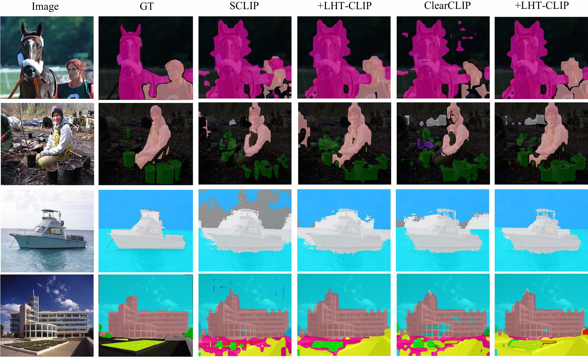
Qualitative comparison between baseline methods (SCLIP, ClearCLIP) and their counterparts integrated with LHT-CLIP.
Extending CLIP models to semantic segmentation remains challenging due to the misalignment between their image-level pre-training objectives and the pixel-level visual understanding required for dense prediction. While prior efforts have achieved encouraging results by reorganizing the final layer and features, they often inherit the global alignment bias of preceding layers, leading to suboptimal segmentation performance. In this work, we propose LHT-CLIP, a novel training-free framework that systematically exploits the visual discriminability of CLIP across layer, head, and token levels. Through comprehensive analysis, we reveal three key insights: (i) the final layers primarily strengthen image–text alignment with sacrifice of visual discriminability; (ii) a subset of attention heads display consistently strong visual discriminability across datasets; (iii) abnormal tokens display sparse and consistent activation patterns compared to normal tokens. Based on these findings, we propose three complementary techniques: spatial-semantic reweighting (SSR), selective head enhancement (SHE), and abnormal token replacement (ATR) to effectively restore visual discriminability and improve segmentation performance without any additional training, auxiliary pre-trained networks, or extensive hyperparameter tuning.
We analyze CLIP's visual discriminability at layer, head, and token levels, and propose LHT-CLIP—a training-free, plug-and-play framework with three complementary strategies that consistently boost open-vocabulary semantic segmentation performance across 8 benchmarks and multiple baselines.
Through comprehensive analysis of CLIP's internal representations, we reveal three critical insights:
The final layers primarily strengthen image–text alignment while sacrificing visual discriminability (e.g., last 3 layers in ViT-B/16 and 8 layers in ViT-L/14), partly due to the emergence of anomalous tokens.
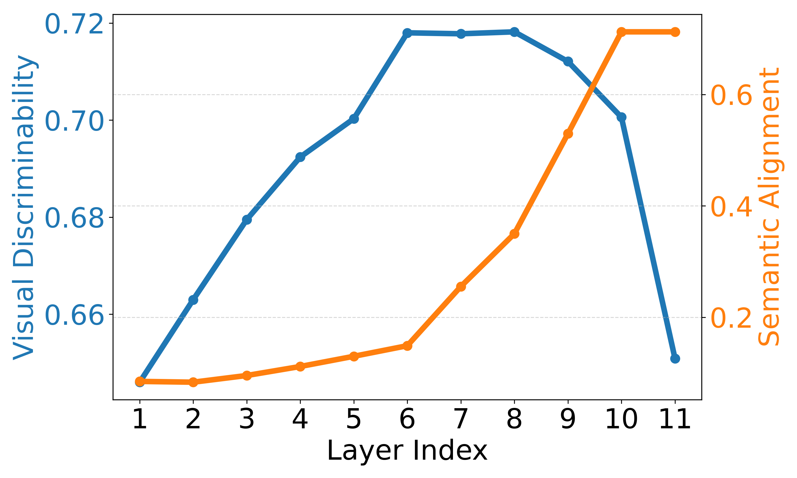
VOC (ViT-B/16)
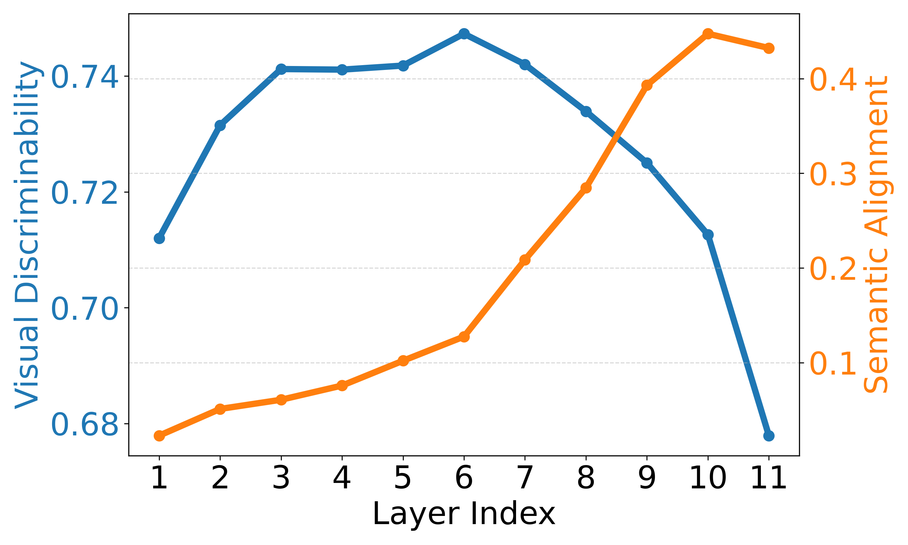
Context (ViT-B/16)
Layer-wise visual discriminability (blue) and semantic alignment (orange) across layers. Visual discriminability drops sharply in final layers while semantic alignment improves only marginally.
Abnormal tokens emerge in deeper layers, attracting disproportionate attention from nearly all spatial positions. These tokens exhibit sparse, high-magnitude activations that remain consistent across positions, layers, and samples.
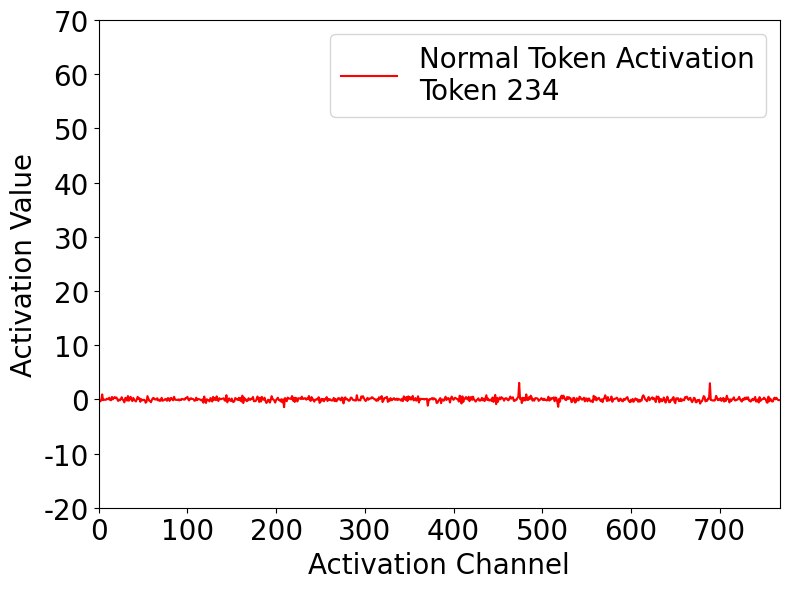
Normal Token Activation
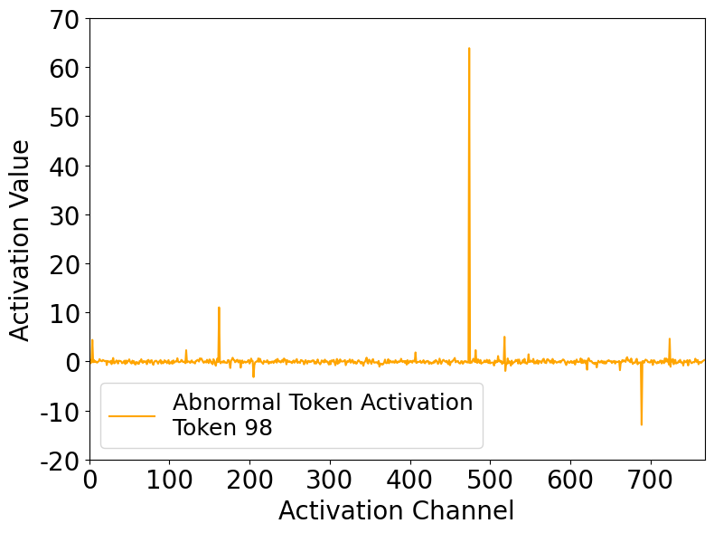
Abnormal Token Activation
Comparison of activations: normal tokens show uniform, low-magnitude activations, while abnormal tokens exhibit sparse, high-magnitude spikes.
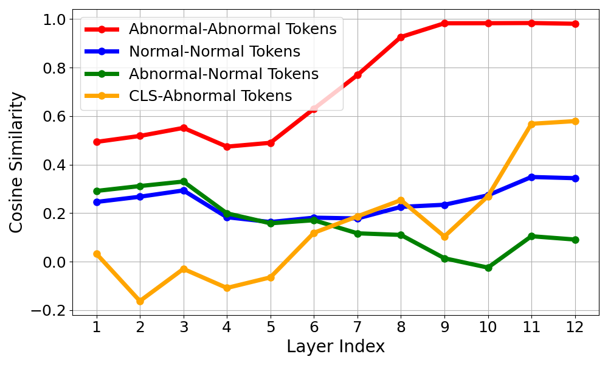
Inter-token Cosine Similarity
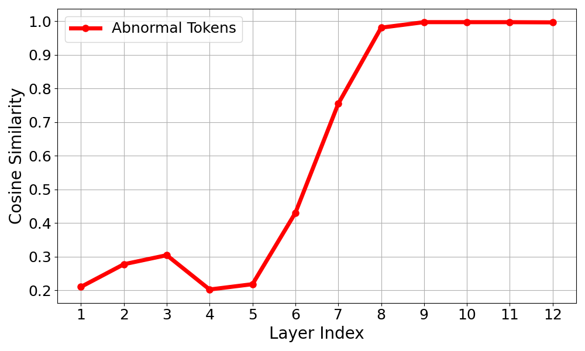
Inter-sample Cosine Similarity
Layer-wise cosine similarity among abnormal tokens across positions and samples. Abnormal tokens exhibit high mutual similarity, confirming they encode consistent, position- and sample-agnostic bias components.
A small subset of attention heads (e.g., 10 out of 144 in ViT-B/16) display consistently strong visual discriminability across datasets, while others contribute noise.
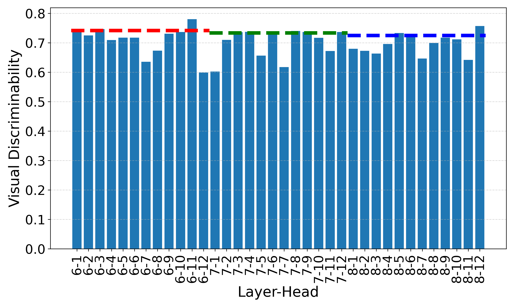
Context (ViT-B/16)
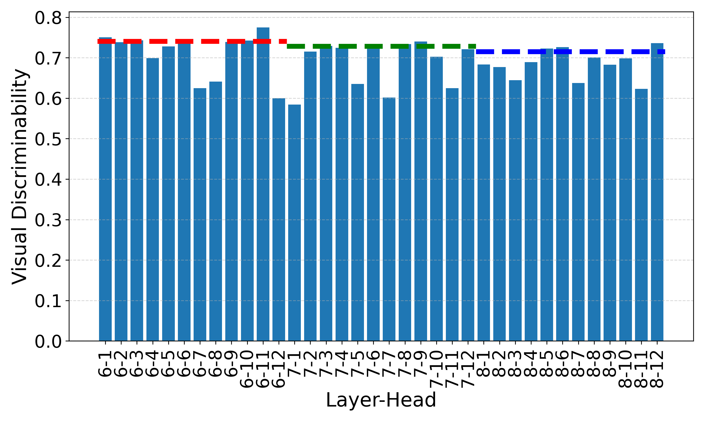
ADE (ViT-B/16)
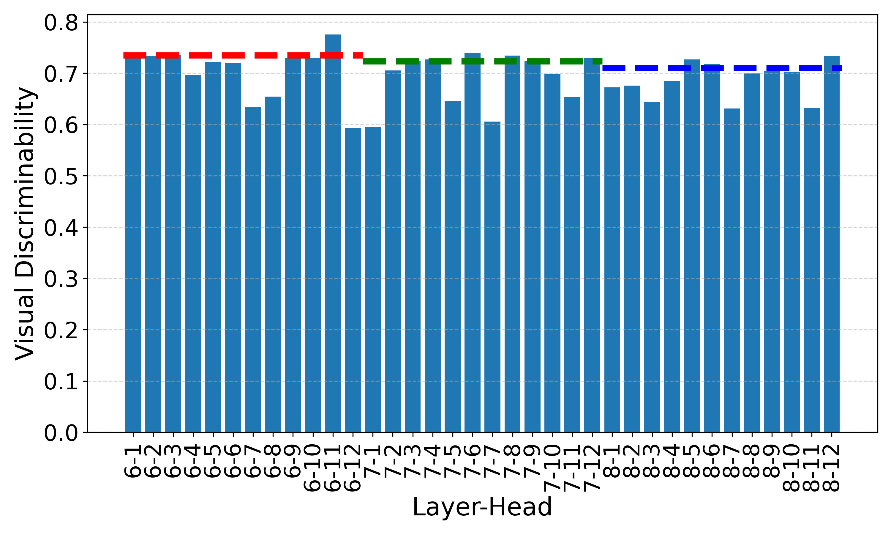
COCO-Stuff (ViT-B/16)
Head-wise visual discriminability across multiple datasets using ViT-B/16. Dashed lines denote layer-wise scores. Different heads exhibit varying discriminability, and certain heads (e.g., the 11th head in the 6th layer) consistently show high discriminability across datasets.
LHT-CLIP comprises three complementary strategies, each targeting a different level of analysis. Together they synergistically enhance visual discriminability while preserving semantic alignment.
Anomalous tokens are identified via Hoyer sparsity thresholding—tokens with sparsity exceeding threshold τ are replaced with a weighted aggregation of their 8 nearest normal neighbors. This simple strategy is applied only at the penultimate layer.
To counteract the visual discriminability degradation in final layers, SSR upweights the residual pathway and downweights the attention/MLP submodules in the last few transformer layers. This is the first method to explicitly modify inference prior to the final layer, substantially improving spatial coherence without compromising semantic alignment.
Top-k discriminative attention heads are selected based on dataset-agnostic visual discriminability scores. Their features are aggregated to construct soft pseudo-masks via thresholded similarity maps, which refine the final-layer features by suppressing spurious cross-category interactions.
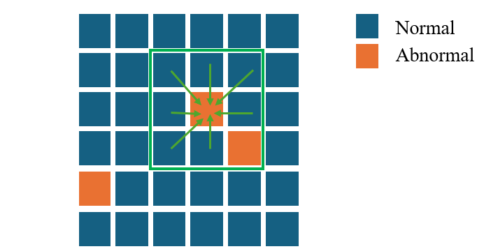
(a) ATR: Abnormal tokens (red) identified by Hoyer sparsity are replaced with their normal neighbors.
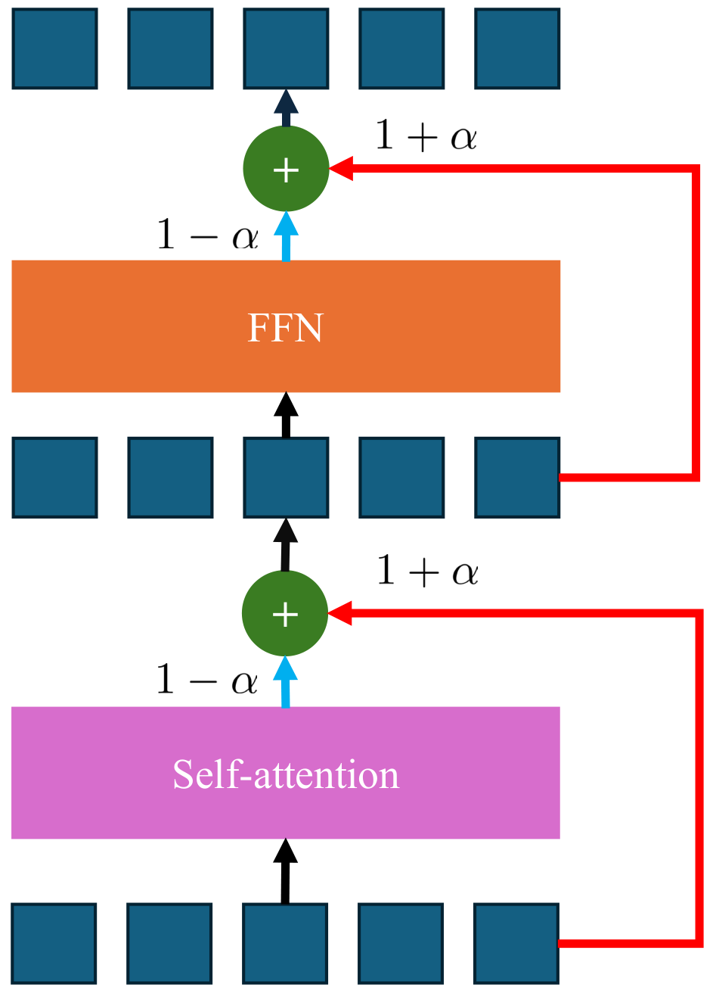
(b) SSR: Residual pathways are upweighted in final layers to restore visual discriminability.
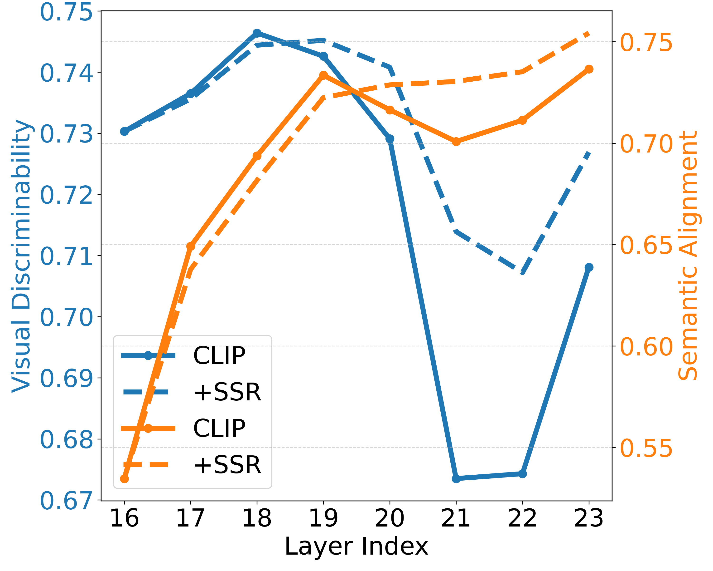
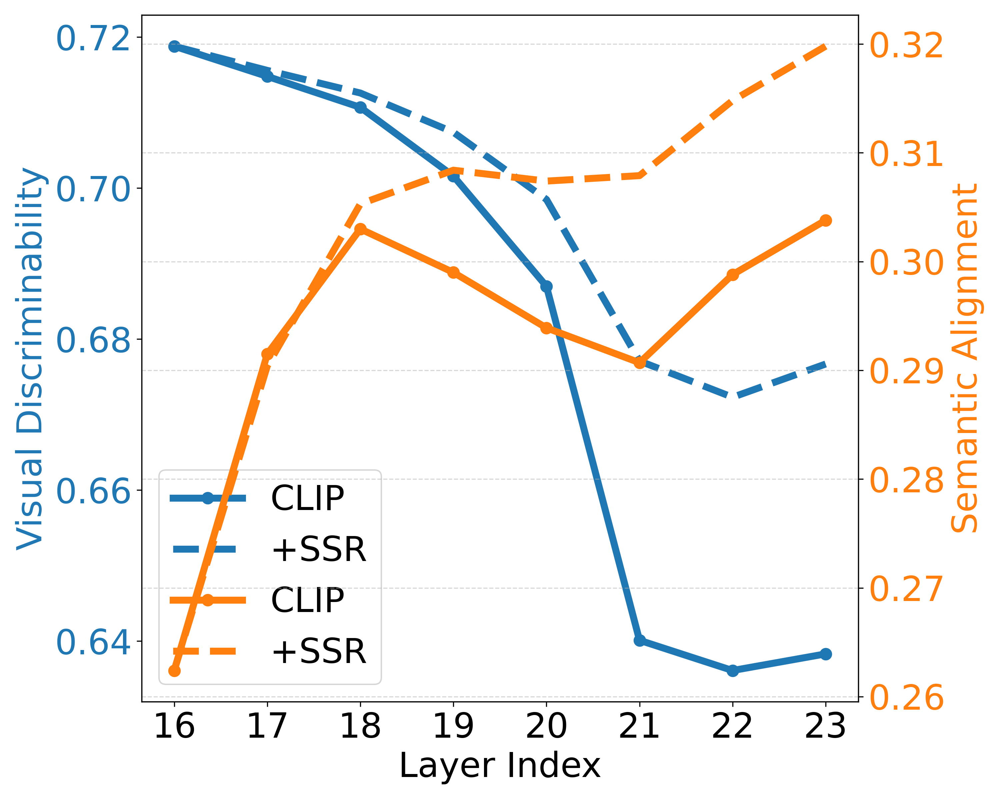
(c) SSR: Effect of SSR on ViT-L/14. Solid lines = baseline CLIP; dashed lines = after applying SSR. SSR notably improves visual discriminability in final layers and consistently enhances semantic alignment.
LHT-CLIP consistently improves state-of-the-art training-free methods across 8 benchmarks using ViT-B/16. As a plug-and-play solution, it also outperforms leading weakly supervised methods.
| Methods | Training | With Background | Without Background | Avg. | ||||||
|---|---|---|---|---|---|---|---|---|---|---|
| VOC21 | C60 | Object | VOC20 | City | C59 | ADE | Stuff | |||
| ReCo | ✓ | 25.1 | 19.9 | 15.7 | 57.7 | 21.1 | 22.3 | 11.2 | 14.8 | 23.5 |
| GroupViT | ✓ | 52.3 | 18.7 | 27.5 | 79.7 | 18.5 | 23.4 | 10.4 | 15.3 | 30.7 |
| TCL | ✓ | 51.2 | 24.3 | 30.4 | 77.5 | 23.1 | 30.3 | 14.9 | 19.6 | 33.9 |
| CLIP | ✗ | 16.2 | 7.7 | 5.5 | 41.8 | 5.5 | 9.2 | 2.1 | 4.4 | 11.6 |
| MaskCLIP | ✗ | 38.8 | 23.6 | 20.6 | 74.9 | 16.4 | 26.4 | 9.8 | 14.8 | 28.2 |
| LaVG | ✗ | 62.1 | 31.6 | 34.2 | 82.5 | 26.2 | 34.7 | 15.8 | 23.2 | 38.8 |
| NACLIP | ✗ | 58.9 | 32.2 | 33.2 | 79.7 | 35.5 | 35.2 | 17.4 | 23.3 | 39.4 |
| SCLIP | ✗ | 59.7 | 31.7 | 33.5 | 81.5 | 32.3 | 34.5 | 16.5 | 22.7 | 39.1 |
| + LHT-CLIP (Ours) | ✗ | 64.8 | 34.8 | 36.6 | 86.3 | 36.1 | 37.6 | 18.0 | 24.9 | 42.4 (+3.3) |
| ClearCLIP | ✗ | 57.0 | 32.2 | 32.5 | 82.3 | 32.8 | 35.8 | 17.3 | 24.0 | 39.2 |
| + LHT-CLIP (Ours) | ✗ | 63.8 | 35.2 | 35.6 | 85.7 | 37.8 | 38.8 | 19.2 | 25.8 | 42.7 (+3.5) |
| ResCLIP | ✗ | 60.0 | 32.7 | 34.0 | 85.5 | 35.6 | 35.8 | 17.7 | 23.8 | 40.6 |
| + LHT-CLIP (Ours) | ✗ | 63.9 | 35.5 | 35.2 | 86.9 | 38.2 | 38.2 | 19.1 | 25.5 | 42.8 (+2.2) |
Performance comparison on 8 semantic segmentation benchmarks using ViT-B/16. LHT-CLIP rows are highlighted in green.
Each component contributes complementary improvements. Combined, they yield a +1.7 mIoU average gain.
| ATR | SSR | SHE | mIoU | Δ |
|---|---|---|---|---|
| – | – | – | 27.5 | – |
| ✓ | ✓ | – | 28.6 | +1.1 |
| – | ✓ | ✓ | 28.9 | +1.4 |
| ✓ | – | ✓ | 28.9 | +1.4 |
| ✓ | ✓ | ✓ | 29.2 | +1.7 |
Combination study of three strategies.
| Model | FLOPs(G)↓ | Params(M)↓ | FPS↑ |
|---|---|---|---|
| CLIP | 106.10 | 149.6 | 13.7 |
| ResCLIP | 141.34 | 149.6 | 3.0 |
| Baseline | 100.70 | 149.6 | 13.9 |
| +LHT-CLIP | 102.65 | 149.6 | 8.2 |
Efficiency comparison. LHT-CLIP is 2.7× faster than ResCLIP.
@article{zhou2025improving,
title = {Improving Visual Discriminability of CLIP for Training-Free Open-Vocabulary Semantic Segmentation},
author = {Zhou, Jinxin and Jiang, Jiachen and Zhu, Zhihui},
journal = {arXiv preprint arXiv:2510.23894},
year = {2025},
}
The authors would like to acknowledge support from NSF grants CCF-2240708 and CCF-2241298.
This webpage was co-designed with GitHub Copilot.